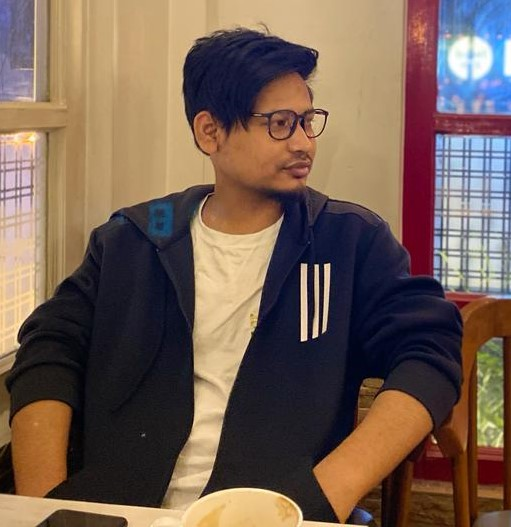

Jugal Chutia

Summary
As a passionate and motivated fresher in the field of web development, I bring a strong foundation in coding, a creative mindset, and a commitment to continuous learning. With a solid understanding of HTML, CSS, and JavaScript, I am eager to contribute my skills to develop dynamic and user-friendly websites.
Education
- Advanced Diploma In Computer Application. (2018-2019)
Work Experience
- Freelance Web Developer
Duration: January 2022 - Present
- Developed and designed responsive and user-friendly websites using HTML, CSS, and JavaScript.
- Collaborated with clients to understand their requirements and translate them into functional website designs
- Implemented front-end frameworks, such as Bootstrap, to enhance website layouts and responsiveness.
- Conducted thorough testing and debugging to ensure cross-browser compatibility and optimal performance.
- Utilized version control systems, such as Git, to manage project files and track changes.
- Optimized websites for search engine optimization (SEO) best practices.
- Stayed up-to-date with the latest web development trends, techniques, and frameworks.
Skills
- Proficiency in HTML, CSS, and JavaScript.
- Familiarity with front-end frameworks such as Bootstrap and jQuery.
- Understanding of responsive design principles and cross-browser compatibility.
- Knowledge of version control systems such as Git.
- Basic understanding of back-end technologies like PHP or Python.
- Strong problem-solving and debugging skills.
- Excellent teamwork and communication skills.★★★★★
Certifications
- The Fundamental of Digital Marketing - Google Digital Garage (2022)
- SEO - HubSpot Academy (2023)
Other